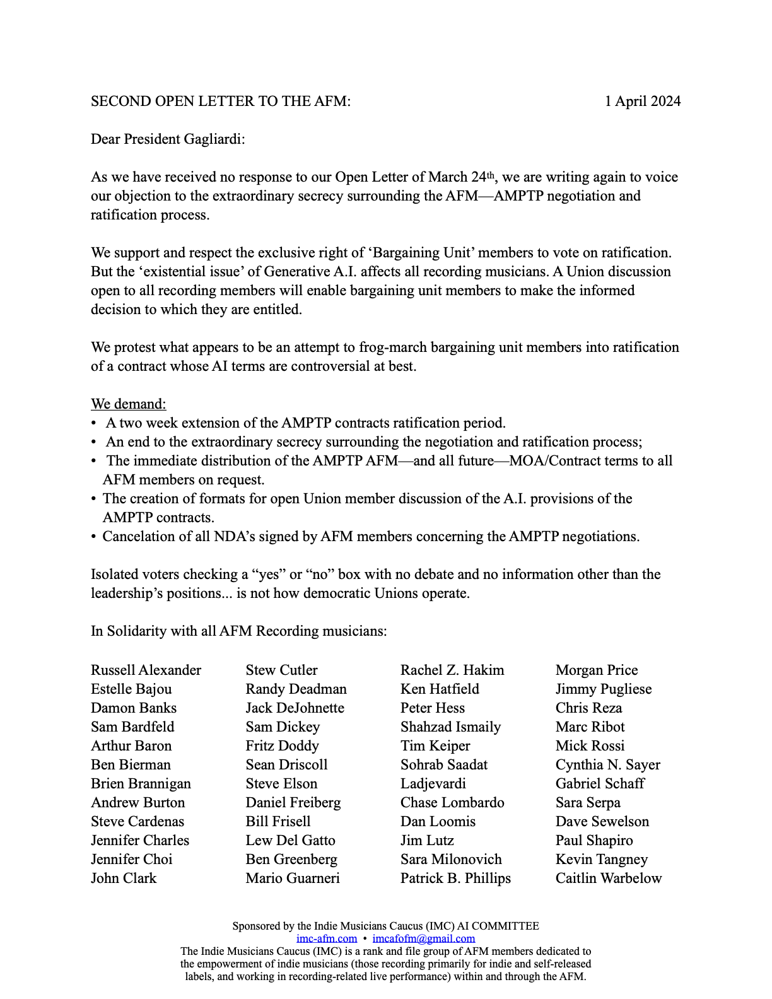

In December 2023,
responding to rank and file concerns over a lack of strike preparation, ambiguous statements by AFM officials,* and a general sense that the Union was not planning to defend its recording musician members from the “existential threat” of unregulated Generative A.I. in the upcoming American Motion Picture and Television Producers (AMPTP) negotiations, IMC posted an Action Network pledge which “serve[d] notice that we will vote against ratification of any contract obligating AFM members to dig our own graves by participating—without a right to consent, compensation, or credit—in the training of our permanent Generative AI replacements”.
Although the Union announced an agreement in February 2024, its terms remained shrouded in an extraordinary degree of NDA enforced secrecy, prompting the IMC to protest, calling for an extension of the Ratification vote period, and other steps needed to ensure an informed and democratic process (See the 3/21 “Open Letter to President Gagliardi... [et al]” below).
As the April 1st ratification deadline drew near without any response from the Union, the IMC sent a second “Open Letter” [see Open Letter 2 below] demanding an end to the secrecy, cancellation of the NDAs, and extension on the ratification period to enable open discussion.
On Friday March 29th, a meeting open to all Pledge signers voted to urge bargaining unit members to vote against ratification [see “Vote No AMPTP Ratification”], and endorsed a proposal to inform the Union's members by publishing our positions [See “For Immediate Release” “Indie musicians group condemns “Completely Unacceptable” AFM-AMPTP Terms on Generative AI”.]
IMC calls on all AFM members to join us in demanding a fair and democratic process on the AMPTP (and every other) Union negotiation and Ratification by signing our Open Letter.*
We call on all AMPTP bargaining unit members who have not yet voted to send the Union back to the negotiating table by voting NO until we have real protections against displacement and exploitation via Generative AI.
Few if any rank and file members have been permitted to see the actual contract terms, and of these some if not all have had to sign "non-disclosure agreements." The Union has refused our requests to share a timetable, and appears ready to keep the contract terms secret until the agreement is mailed out for a ratification vote. Such secrecy deprives members of the opportunity to study and discuss contract language that will impact the future of all recording members.
We call on all who support an AFM which works for ALL its members to join with IMC in fighting for the empowerment of Indie musicians within and through the AFM.*
* If the link doesn't work for your browser, please email us at imcafofm@gmail.com.